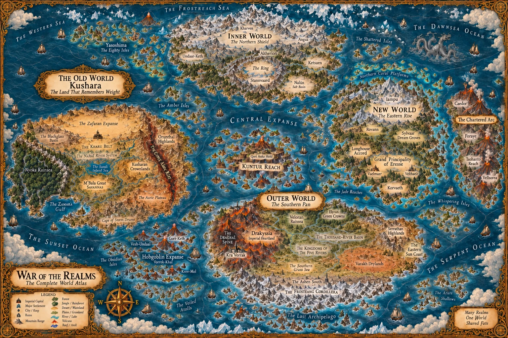

Say itthe FOR KWOR-terz
Borders move. Bedrock does not. A shaft sunk on the northern shield behaves the same whichever charter is over the headframe, and a shaft sunk in the eastern ash will kill your men the same way regardless of which flag is over it.
Any surveyor who reads this ledger politically has read it wrong.
The fourth revision of the surveyors’ ledger began with a woman eating a page. Sanna Thirlwell, a surveyor of the northern shield, was hauled before a crown notary at the Midwinter Fair in Altherion for entering a copper seam under the wrong king’s name, and she climbed onto the notary’s table among the sugar crowns and roast geese, held the entry up so that half the fair could read it, and ate it, wax and all. The seam, she told him with her mouth full, had not changed hands that morning. Only the kings had. The fine took six years of her wages, both crowns billed her separately for the insult, and within the decade the Measurewrights had struck every kingdom’s name from the deposit entries, which they will tell you had nothing to do with her.
Everything in this section is written in her spirit, from the ground up. The four quarters are quarters of one body of land, with isles off its shores, and a carter can take salt from the northern basins to the warm southern marches without once paying a ferryman, though he will pay nearly everyone else. (The later hand in the Concordance of Ages calls it the Grand World. Nobody standing on it has yet needed the name.)
The World Atlas

The four quarters on one sheet: the Inner World on its northern shield, the Old World of Kushara to the west, the New World’s eastern rise and the Chartered Arc beyond it, the Outer World’s southern pan (painted in its older arrangement; the even split of the vampire north and the dragon south is laid out on the Outer World’s own atlas), and the Kuntur Reach in the Central Expanse between them.
The Four Quarters
All four were emplaced in the First Eon, which under the Concordance closes at Year −900, and nothing has been added to any of them since. The Measurewrights have been asked whether the corrected count makes the deposits younger, and answer that it does not. It makes them nearer. A seam emplaced fourteen hundred years ago and half dug out in the last six hundred is a different object, politically, from a seam emplaced before memory, and every chartered company in the western quarter is presently discovering the difference.
| Quarter | In one breath | Substrate | Condition | The bind it lives under |
|---|---|---|---|---|
| North · Inner World | The oldest rock in the world, soaked in Essence, worth a fortune and trying to kill you on the way to market | Old cold shield, glaciated, one impact ring, one salt basin | Superb bearing stock, high ambient Essence, hardly a finished road | Cheap array heat, expensive everything else |
| West · Old World | The first land to see the bottom of its own ground, and still the land with the most skilled hands | Worn collisional belt, granite cupolas, coal foreland, karst | Deepest workings, most complete works, exhausted ground and depleted Essence | Total array dependency for survival, not production |
| East · New World | Young fire-mountains, ore lying on the surface, and Wellsprings that move house | Live volcanic arc, young, wet, mobile: the chartered arc; the elven old-ground beside it lies outside this ledger | Richest surface ore, self-supplying cement, mobile Wellsprings | Almost no array dependency outside the eastern arc |
| South · Outer World | Dry pans and bone-beds where the ore needs no furnace and the buyers live a long way off | Old dry craton, flood basalt, ophiolite, pans, bone-beds, Crevice | No array trade possible; materials requiring no processing | Extraction by hand at scale, value added elsewhere |
An array, since the table leans on the word, is a bank of glyphs cut by hand into stone and metal to hold a working steady, and it is the largest thing an Engraver ever makes. Ambient Essence, in the surveyors’ old habit of speech, is the Aether the ground carries for a practitioner to pull: Aetheric Density to a scholar, rich or thin ground in polite company, fat or lean in the street. It fills every reserve, whatever road its owner walks. The Measurewrights take two further readings off the same ground, and neither is a thing anyone can pull. Echo Depth is how thickly souls and memory lie on a place (graveyards, temples, old homes), and it makes Spirit workings cheap there. Thread Weight is how much has been decided on it (battlefields, coronation halls, crossroads), and it makes Fate pulls cheap there. A place can run high in one, two or all three, fighters choose their ground by Path, and The Three Grounds has the instruments, the famous places and the quarrels. A chartered company here is a body of people holding a charter to dig, and they are about as lovable as that sounds.
The pattern worth stating plainly. The quarter with the most Essence has the fewest great works. The quarter with the most works has the least Essence. And the two quarters in between have each solved the problem by refusing to build anything that would create the dependency in the first place.
The Accord’s standing assumption that great works follow from great magic is not supported anywhere in the ledger.
The Twin Rating
A material has two independent worths, and the persistent error of the trade is treating them as one.
The Bearing is what the material does under load. Compression, tension, shear, thermal cycling, abrasion.
Measured on the press, in the ordinary way, and it has nothing whatsoever to do with Essence.
The Holding is what the material does under Essence. How much it retains, how long, how cleanly it releases, and whether an inscription laid into it stays legible to the Continuum over years rather than weeks.
Measured on the coil.
The two do not track each other. Forge-Iron out of Altherion bears magnificently and holds almost nothing, which is exactly why it arms the line infantry of six kingdoms and appears in no ward-network anywhere. Gloomhide is spiritually inert and physically superb. Mireclay holds a summoning totem for one night and cannot be trusted to hold a roof for one hour.
A material that scores high on both gets a better word than good. It is called strategic, and the Accord keeps a register of who owns the seams.
Trade speech has drifted into shorthand. Bearing-grade means a material bought for its physical work: foundations, hulls, siege frames, bridges. Holding-grade means a material bought for its Essence work: substrate stock, glyph-line, gasket, lens, inscription medium. A Measurewright will not sell you a single stone until you tell him which of the two you came for.
Two further readings appear where the assay houses have agreed them. Resonance, the Wellspring or Wellsprings a substrate is naturally sympathetic to: basalt takes Coagula and Fixatio, quartz amplifies Fractura and Luminalis, iron conducts Manganthra and Aurevane, gold carries Benediction and Sublimatio, obsidian holds Tenebra and Oblivara. An Engraver who fights his substrate pays for it in the lifespan of the inscription. And Kind and Domain, recorded so that a thermal refractory is not ordered for an electrical duty by a clerk who never went underground.
The tier notation used throughout, T0 through T9, is the standing Accord materials scale.
The Registers
Three instruments cover this ground and they do not sound alike.
| Register | Voice | Speaks to |
|---|---|---|
| The Bearing and the Holding | A surveyor’s ledger. Every figure taken at the face rather than from a chartered claim; where a claim and a reading disagree, the reading stands. Kingdom names struck from the deposit entries in the fourth revision, on the ground that a ledger which names a seam for the crown that holds it must be reissued whenever the crown changes. | Substrate, deposits, works, hazards |
| Value, Coin and Trade | An economist’s account, written by people who pay creditors in a fixed order and have concluded that the order is the most honest statement of value anyone has produced. | The two ledgers, the four metals, the oath, rank as property |
| The Hobgoblin Expanse | A world-bible entry compiled for the Archives Eternal and left unsigned, as is customary for documents whose authorship is institutional. | Vorruk-Khal, the Scattering, the Bugbear peoples, the Keth-Gorrum |
Entries
Read The Bearing and the Holding for what the ground is and what may be made of it. Read Value, Coin and Trade for what any of it is worth, and why anyone accepts paper. Read The Hobgoblin Expanse for the one polity in the four quarters that was thrown out of the west, built a war-moot on volcanic rock nobody wanted, and has run it for seven hundred and sixty-five years without a king.
Distance measured in days. News, Rumor and the Speed of Information sits under this section because what it actually documents is how far away anything is.
Three channels. The beacon line is near-instant, priced by the word, read by the Guild, and runs from hilltop to hilltop, which means it reaches exactly as far as somebody will pay a warden to stand on a hill and no further. A district past the last tower is deaf, and a Withering-era quarter loses its towers at the same rate it loses density. The post is cheap, prepaid, and the only channel still serving a deaf district. The mouth (heralds, minstrels, bounty bills, bookies’ boards and the tap-room) is free, faster over short distances, and wrong.
Carries a distance-and-channel table for answering on the spot when a Front’s news reaches a given place, plus the standing rule that follows from all of it: ask whether the destination is on the line before asking how far it is.
Read beside this. The Three Grounds for what a place holds for each Path, The Sixty Wellsprings for what each kind of ground favors and hates, Dungeons for what grows on it, and The Veil for why some places are thinner than others.